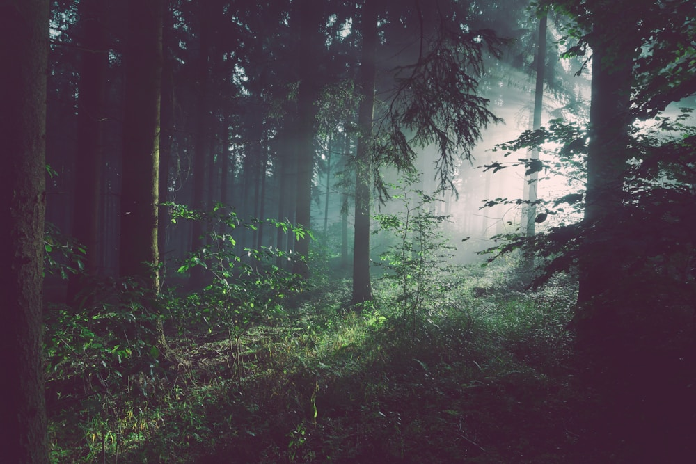

2006
Turning the corner
Intel reached its peak operational greenhouse gas emissions and began accelerating investments in abatement and efficiency.
This turning point helped shape the long-term climate work that followed, from cleaner manufacturing to renewable electricity.